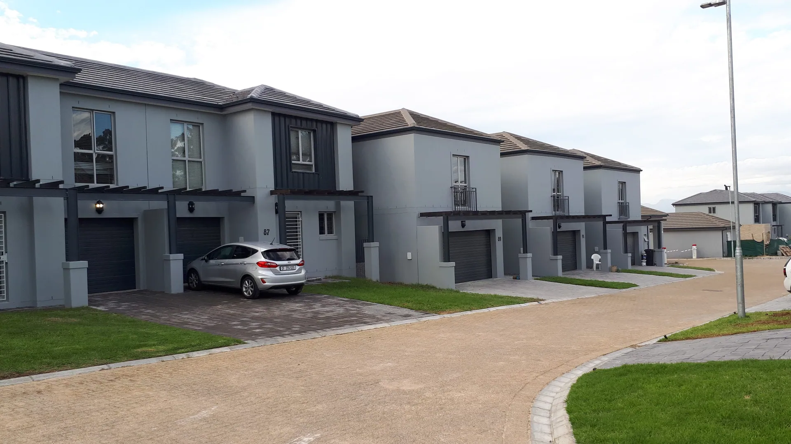
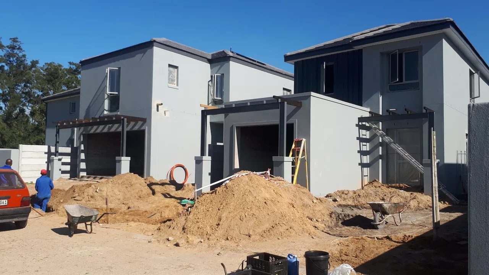
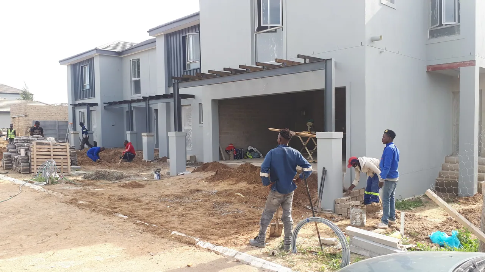
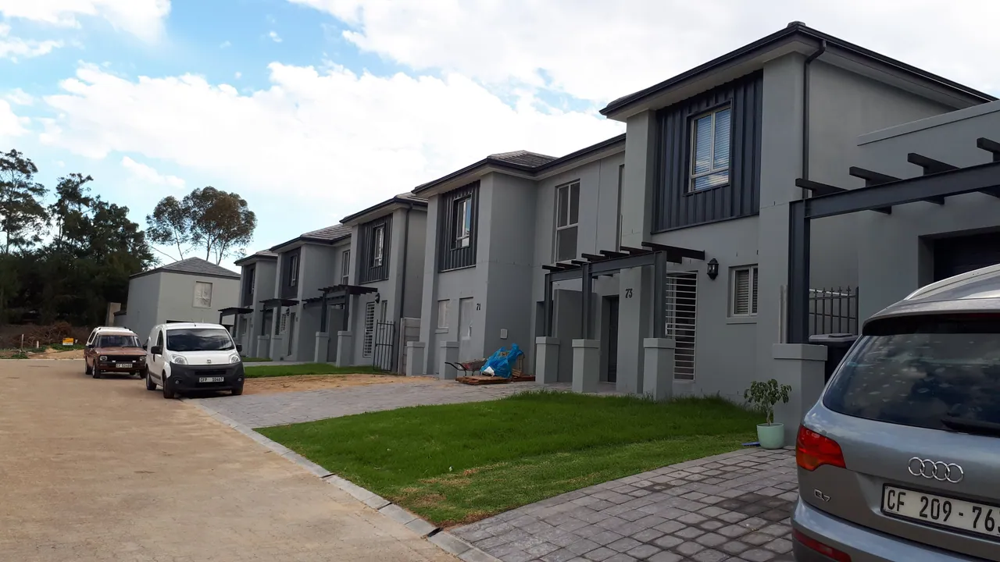

Projects / 2021 photo record
Residential work and finishes.
Dated photographs showing different stages of building work. These images are an archive record, not a single named project.
← All projects

Interior finish / April 2021 Residential work / May 2021 
Foundation work / May 2021 Building work / May 2021 Residential exterior / May 2021 
Residential exterior / May 2021
2021 archive
A closer look.
Photo dates are taken from the supplied archive filenames. Project names, locations, scopes and completion status have not been confirmed.



Planning something similar?
Tell us your location, stage and the type of work you need.
Discuss your project ↗